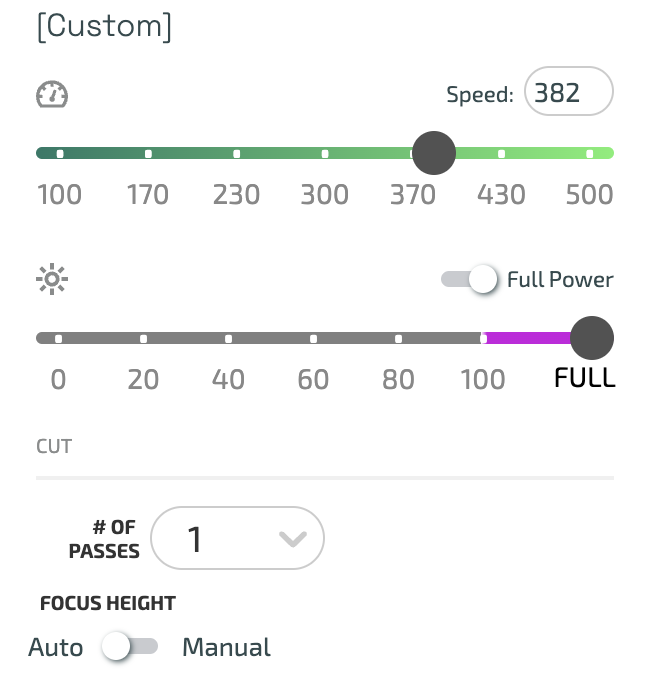

A1: Modelling and Laser Cutting
This assignment asked us to create a kit consisting of at least 30 instances of at least one unique part.
Initially, I wanted to create a kit made up of shurikens, which is a type of throwing weapon. However, I realized the shapes would not fit properly together, and so I decided to work on something simpler for the sake of learning. Because I did not want to work with squares, I decided to create a circular kit that could be connected at multiple angles.
To begin, I used my electronic digital caliper to measure the box thickness. I realized that this was important because an intersecting slot that is too thin would not make the kit press fit.

Next, I opened up Rhino and created the foundation of my design. I created a circle that is 50mm, which I thought was an appropriate size for one kit. Then, I worked on the intersecting slots. I first deliberated on making the slot width greater than 4.2mm so that the kits would connect smoothly. However, after learning that the laser cut burn causes extra cardboard to be teared off than the precise measurement, I concluded that exactly 4.2 was sufficient.
I wanted my kit to be assemblable at all angles. Therefore, I rotated my initial rectangle and conducted an ArrayPolar command to replicate it at different angles. The finishing intersecting slot has a height of 10mm, which I also thought was sufficient for connection.
I trimmed the portions that would not be needed for the kit.
Afterwards, I joined the curves together to create one whole shape. This ensures that the laser cutting would be done in an efficient manner.
I then gave height to the shape by using the ExtrudeCrv command. The height I gave was 4.2mm, which was the reading that came our from the digital caliper.

Finally, I exported the Rhino file into Illustrator to get it prepared for printing. I created a canvas that was the dimensions of my cardboard box, which was 17inch x 18.5 inch.
To print, because the Mill printers were broken, I went to a different maker space to print. There, I placed my cardboard and used a different laser printer. The settings I used are attached below:

To ensure that my kit would fit, I first did a trial run and just printed two pieces. The fit was a little tight but had no issues.

I then printed 30 copies of my kit knowing that there were no issues with the test prints.

Here are some photos of my assembled kit! I realized these are very flexible and can be assembled in any form I imagine. Therefore, I decided to create a car using my pieces. Do you see the car?